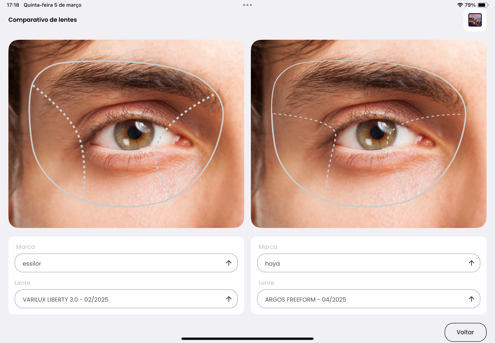
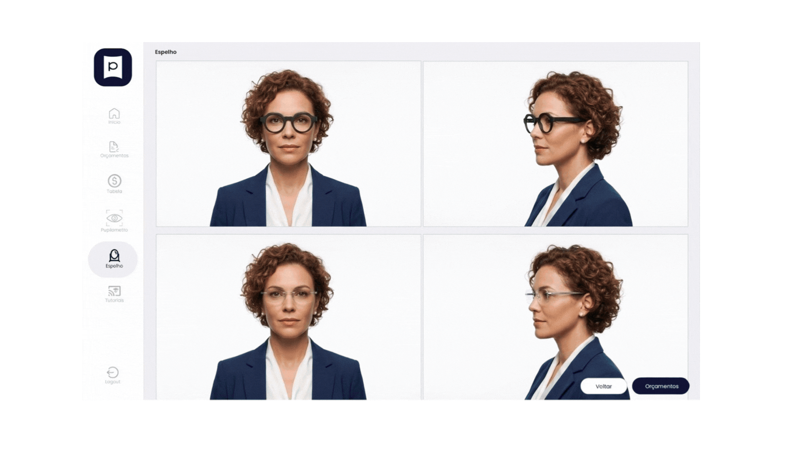

Adicione sua imagem aqui (1920x1080px recomendado)

Uma plataforma completa desenvolvida especialmente para óticas. Simplifique processos, aumente vendas e impressione seus clientes com tecnologia moderna.
Demonstrações visuais aumentam a percepção de valor, fortalecem o argumento do vendedor e elevam o ticket médio.
Interface simples e intuitiva que auxilia vendedores na explicação das lentes, reduz erros e dá mais segurança no fechamento.
Demonstre visualmente a diferença entre campos de visão, facilitando a explicação e diminuindo objeções.
Use no celular, tablet ou computador. Tudo na nuvem, sem instalação.
A integração com o Sistema de Gestão Kero Ótica conecta a demonstração ao orçamento e à venda.
Gere orçamentos na hora e transforme seu atendimento em uma experiência profissional.
Personalize o demonstrativo com a identidade visual da sua ótica e inclua lentes de marca própria no catálogo digital do Pupilens.
Perfeito para óticas que querem modernizar o atendimento e aumentar as vendas com tecnologia.
Ferramenta essencial para profissionais que querem oferecer o melhor atendimento.
Suporte para múltiplas filiais. Gerencie todas as suas lojas em uma única plataforma.
O Pupilens é um demonstrativo inteligente de lentes desenvolvido para modernizar o atendimento nas óticas. Ele permite que o cliente visualize de forma intuitiva como a lente escolhida funciona na prática, tornando a explicação mais clara, profissional e convincente. Permite simular, de forma visual e interativa, os principais tratamentos de lentes, como filtro azul, antirreflexo, polarização, tratamento hidrofóbico, oleofóbico, antirrisco e digital surface.
Sim! O Pupilens é um app mobile desenvolvido especialmente para uso em tablets. É ideal para demonstrações de lentes aos clientes na loja e criar orçamentos durante os atendimentos. Também é possível utilizá-lo em navegador web pelo computador, porém com algumas funções limitadas.
O catálogo digital inclui as principais marcas de lentes do mercado, além da possibilidade de personalizá-lo com lentes de marca própria. Você pode ver detalhes completos: materiais, tratamentos, cores, espessura e até demonstrações visuais de como as lentes funcionam.
Veja como o demonstrativo de lentes Pupilens pode transformar o atendimento e aumentar as vendas da sua ótica.